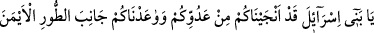
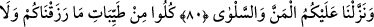
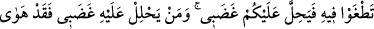
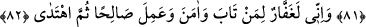

TAŞKINLIK VE NANKÖRLÜK
ETMEYİNİZ
80. Ey İsrailoğulları! Sizi düşmanınızdan kurtardık; Tûr’un sağ tarafına
(gelmeniz için) size vâde tanıdık ve size kudret helvası ile bıldırcın eti lütfettik.
81. Size rızık olarak verdiklerimizin temiz olanlarından yiyin, bu hususta taşkınlık
ve nankörlük de etmeyin; sonra sizi gadabım çarpar. Kimi de gadabım çarparsa,
hakikaten o, yıkılıp gitmiştir.
82. Şu da muhakkak ki ben, tevbe eden, inanan ve yararlı iş yapan, sonra
(böylece) doğru yolda giden kimseyi bağışlarım.
Fir’avn ve ordusunu denizde boğup İsrâiloğulları’nı onlardan kurtardıktan sonra dedik
ki: “Ey İsrailoğulları! Sizi düşmanınızdan” Fir’avn ve kavminden “kurtardık;” Onlar
sizin oğullarınızı kesiyor, kadınlarınızı sağ bırakıyorlar ve sizi en ağır işlerde
çalıştırıyorlardı.
“Tûr’un sağ tarafına (gelmeniz için) size vâde tanıdık.” Yani Nebiniz Mûsâ (a.s.)
vâsıtasıyla Tur’un sağ tarafına gelmenizi sözleştik. Tur’un sağ tarafı, Mısır’dan Şam’a
gelene göredir. Yoksa bir dağın sağı ya da solu olmaz. Yâni, Mûsâ (a.s.)’ın münâcât için
ve Tevrât’ı ona indirmek için sözleştik. Vâde tanıma/sözleşme Mûsâ (a.s.)’a olduğu
halde İsrailoğulları’na nisbet edilmesi, onlarla ilgili olmasından ve faydasının
kendilerine sirayet etmesindendir.
“Ve size kudret helvası ile bıldırcın eti lütfettik.”
Kudret helvası, ağaçlar üzerine düşen çiğ gibi hoş ve tatlı bir şeydir. İsrailoğulları
çölde iken üzerlerine kudret helvâsı iniyor, âdetâ kar gibi gökten yağıyordu. Fecirden
güneşin doğuşuna kadar bu iniş devam ediyordu. Her insan için bir ölçek kudret helvası
vardı. Onlara bıldırcın da gönderiliyordu ve bir kişi bunlardan kendine yetecek kadarını
kesiyordu.
Bu şöyle oldu: İsrâiloğulları’na zorbaların bulunduğu şehre girmeleri emredildiği
vakit bundan yüz çevirdiler. Bunun üzerine Allah onları kırk yıl yeryüzünde şaşkın
şaşkın dolaşmakla cezâlandırdı (Bk. el-Mâide, 5/22-26). Bu, sanki şefkatli bir babanın
yaramazlık yapan evlâdını terbiye etmek için dövmesi, ama ona ihsânını kesmemesi